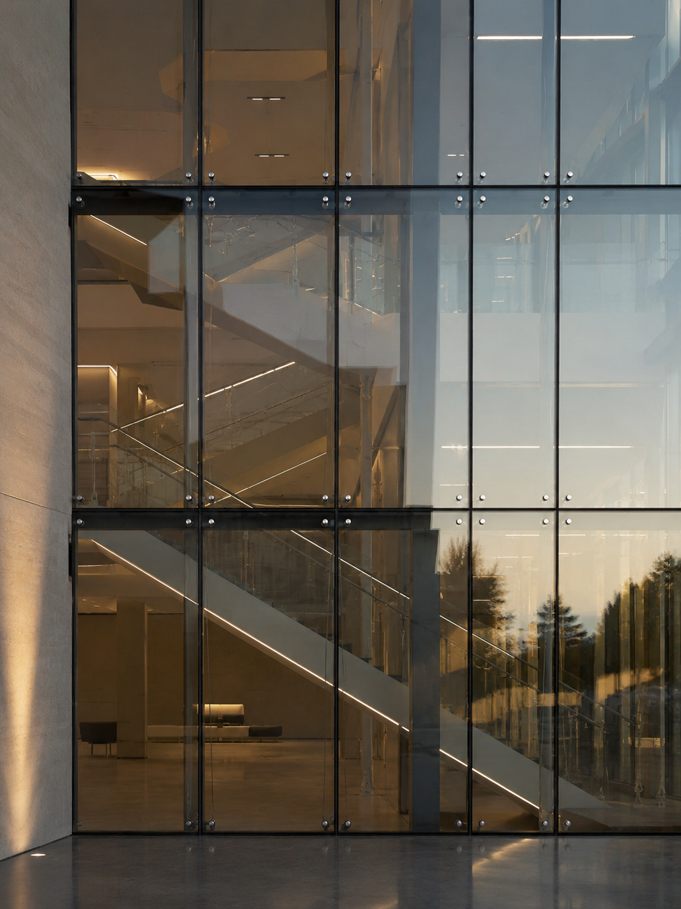

 the glazing notes · n° 01
the glazing notes · n° 01a sixty second guide
Aluminium or PVC?
How to choose your window frame.
01 / 05

the glazing notes · n° 01How to choose your window frame.
 i. the difference
i. the differenceThe difference is the material around the glass.
Everything else follows from that.
iv. your turnLarge spans and slim frames point to aluminium. Energy and value point to PVC. Size and sightline decide it.
What are you specifying, and why? Tell us in the comments.